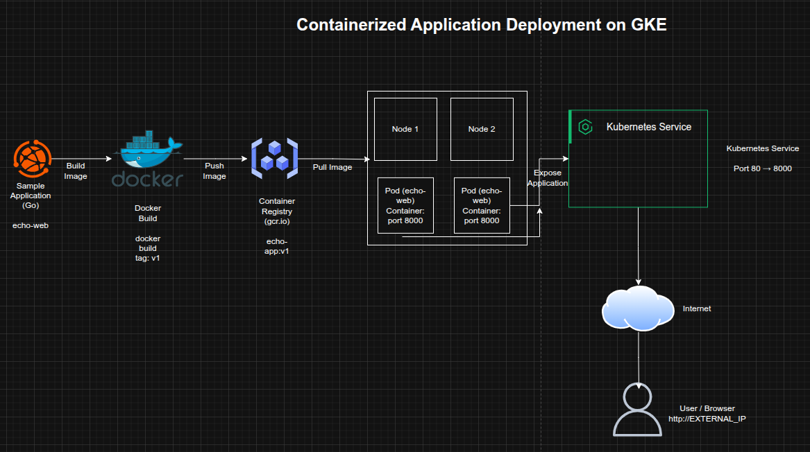

Containerized Application Deployment on Google Kubernetes Engine (GKE)
Containerized Application Deployment on Google Kubernetes Engine (GKE)
Timeline: December 2025
Role: Cloud Engineer / Cloud Architect
Skills: Google Kubernetes Engine (GKE), Docker, Google Container Registry, Kubernetes Deployments, Kubernetes Services, Cloud Storage, Containerized Applications
Project Summary
This project focused on deploying a containerized web application to Google Kubernetes Engine (GKE) as part of a cloud-native application adoption workflow. The objective was to package a sample application into a Docker image, publish it to Google Container Registry, provision a Kubernetes cluster, and deploy the workload as a managed service.
The implementation demonstrated the full path from application packaging to cluster-based deployment, reflecting a modern cloud-native delivery pattern suitable for scalable microservices-oriented environments.
Objectives
- Build a Docker image for a sample web application
- Tag and publish the image to Google Container Registry
- Provision a Kubernetes cluster on GKE
- Deploy the application as a Kubernetes workload
- Expose the application through a Kubernetes Service
- Validate successful deployment and external accessibility
Architecture Overview
The architecture consisted of:
- A sample Go web application packaged with a Dockerfile
- A Docker image built and tagged for Google Container Registry (
gcr.io) - A Google Kubernetes Engine (GKE) cluster provisioned with two worker nodes
- A Kubernetes Deployment running the application container
- A Kubernetes Service exposing the application externally on port 80
- Internal application container traffic running on port 8000

Implementation & Highlights
1. Kubernetes Cluster Provisioning
- Created a Kubernetes cluster named
echo-cluster - Provisioned the cluster with two e2-standard-2 nodes
- Established the target environment for containerized application testing
2. Application Packaging with Docker
- Retrieved the sample application archive (
echo-web.tar.gz) from Cloud Storage - Built a Docker image for the provided Go application
- Applied the required
v1tag for controlled versioning
3. Image Publication to Container Registry
- Tagged the image using the
gcr.ioregistry naming format - Pushed the application image to Google Container Registry
- Prepared the image for cluster-based deployment
4. Workload Deployment to GKE
- Created a Kubernetes Deployment named
echo-web - Scheduled the containerized application onto the GKE cluster
- Validated successful pod creation and workload execution
5. Service Exposure and Port Mapping
- Exposed the application using a Kubernetes Service
- Mapped external web traffic on port 80 to the application’s internal port 8000
- Enabled browser-based access to the deployed application
Design Decisions
- Used containerization to package application dependencies consistently
- Leveraged Google Container Registry as a centralized image repository
- Used GKE to provide managed Kubernetes orchestration
- Applied service-level port translation to align internal application behavior with standard web access patterns
- Structured the deployment to reflect a repeatable cloud-native delivery workflow
Results & Impact
- Successfully deployed a containerized application to Google Kubernetes Engine
- Demonstrated the ability to move from source application package to live Kubernetes workload
- Validated key cloud-native concepts including:
- image build and tagging
- registry publication
- Kubernetes deployment management
- service exposure and port mapping
- Strengthened practical experience in container orchestration and application modernization
Tools & Technologies Used
- Google Kubernetes Engine (GKE) – Managed Kubernetes cluster
- Docker – Container image packaging
- Google Container Registry (GCR) – Image repository
- Kubernetes Deployment – Application rollout
- Kubernetes Service – External exposure and traffic routing
- Cloud Storage – Application archive source
- Go Application – Sample containerized workload
Outcome
This project demonstrates the ability to implement a cloud-native application deployment workflow on Google Cloud, from container build through registry publication to managed Kubernetes deployment. It highlights practical skills in containerization, orchestration, and service exposure, which are directly relevant to modern cloud engineering and application modernization roles.